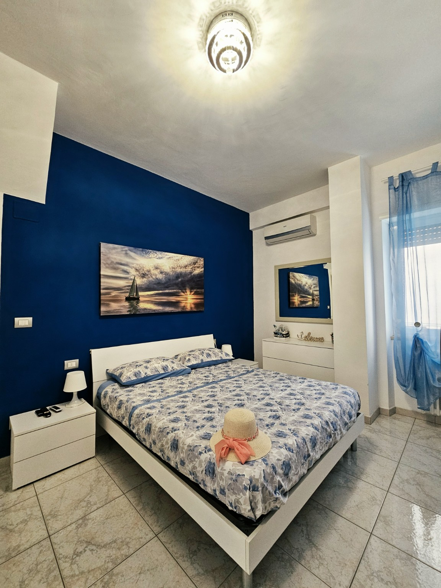
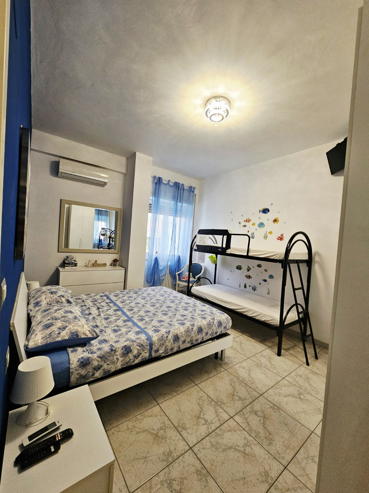
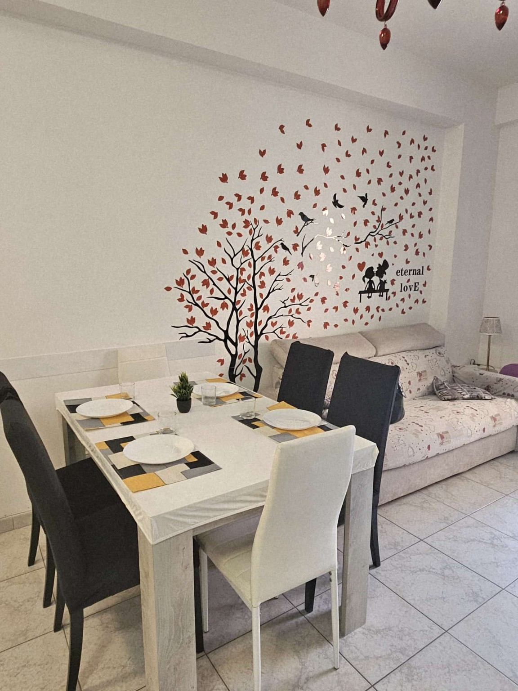
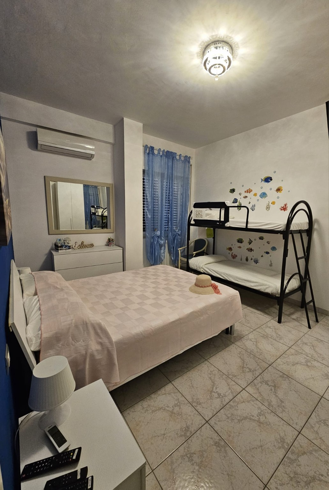
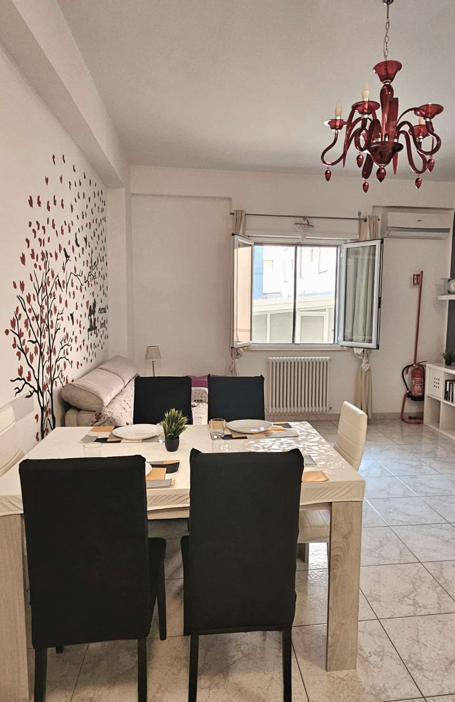
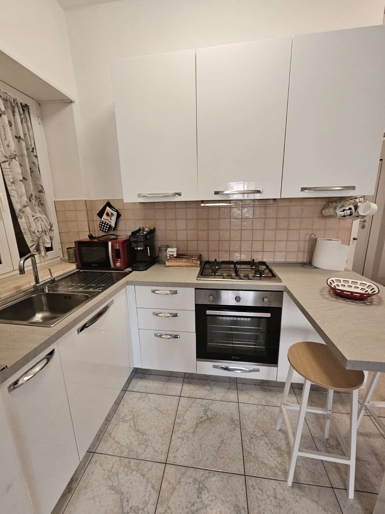
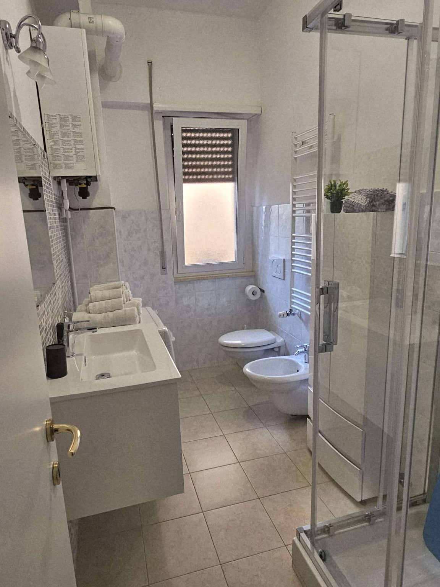
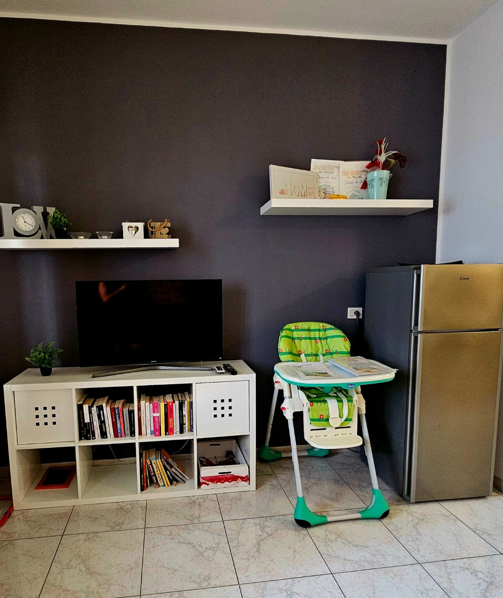

Fino a 5 ospiti
Letto matrimoniale, letto a castello e divano letto.
Appartamento vacanze
Comfort, mare e relax a San Benedetto del Tronto. Un appartamento curato, luminoso e perfetto per famiglie, coppie e piccoli gruppi.
Benvenuti
La Casa di Cri si trova in Via Orazio 11, San Benedetto del Tronto. Gli ambienti sono pratici, puliti e pensati per offrire un soggiorno comodo: camera matrimoniale, letto a castello, zona giorno, cucina attrezzata e bagno con doccia.
Letto matrimoniale, letto a castello e divano letto.
Comfort in camera e zona giorno.
Forno, piano cottura, frigorifero e accessori.
Spazi funzionali, seggiolone e ambienti comodi.
Galleria








Servizi
Dal 1° giugno al 15 settembre è incluso gratuitamente, per tutta la durata del soggiorno, un ombrellone e due lettini presso lo chalet convenzionato.
Nello stesso periodo è disponibile gratuitamente un posto auto, per una sola autovettura, presso un parcheggio convenzionato situato a circa 500 metri dall’appartamento.
Il parcheggio è chiuso e videosorvegliato, ma non custodito. L’ospite è tenuto a rispettare il regolamento dell’area, la segnaletica presente e le disposizioni applicabili del Codice della Strada.
Il veicolo viene lasciato sotto la responsabilità del proprietario o dell’utilizzatore. La Casa di Cri mette gratuitamente a disposizione esclusivamente la convenzione e non assume obblighi di custodia, fatti salvi i casi di responsabilità inderogabilmente previsti dalla legge.
Dove siamo
Codice Identificativo Nazionale
Struttura regolarmente registrata presso il Ministero del Turismo.
Contatti
Per informazioni, prezzi e disponibilità, scrivici direttamente su WhatsApp.
Scrivi su WhatsAppTelefono: 388 102 4009